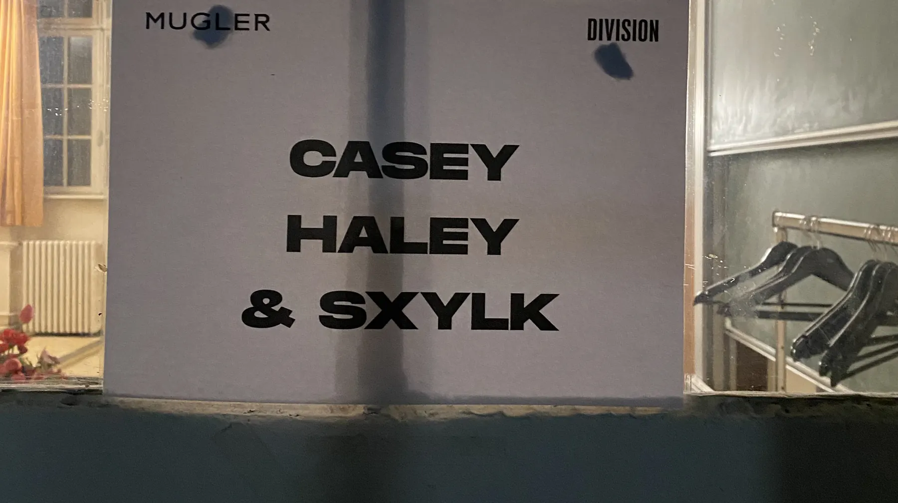

mugler
One sound across the Mugler F/W 2024 runway, campaign and post-production.
- Role
- Music Director
- Place
- Paris, France
- Dates
- F/W 2024
- Disciplines
- Music direction, Show soundtrack, Campaign sound, Remixes
The show
Results
- 1M+
- social impressions per reel, within 24 hours
- $40K
- licensing budget managed
The brief
For the Mugler Fall/Winter 2024 collection I set the sonic direction across the runway, the global campaign and post-production sound.
I worked with the creative director and the production team so every channel carried the same sound.
What I did
Runway soundtrack
Curated the full runway soundtrack for the Paris show.
Live show
DJ’d the live show at Lycée Carnot, Paris.
Hero track
Produced the hero track, an original JT remix used across the runway and all global ad channels, including the exclusive show mix of “Sideways.”
Campaign sound
Curated the global campaign sound design.
Licensing
Managed a $40K licensing budget.
Post-production sound
Directed the post-production sound design.
The sound
My exclusive show mix of JT’s “Sideways,” made for the runway.
My live mix from the show at Lycée Carnot, Paris. Open on SoundCloud ↗︎
